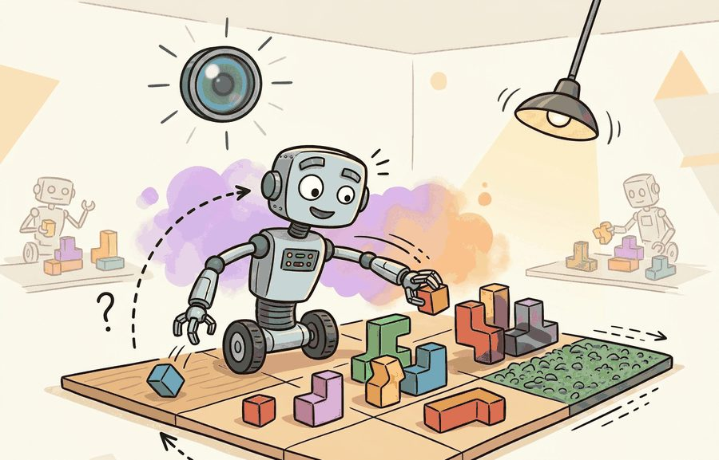
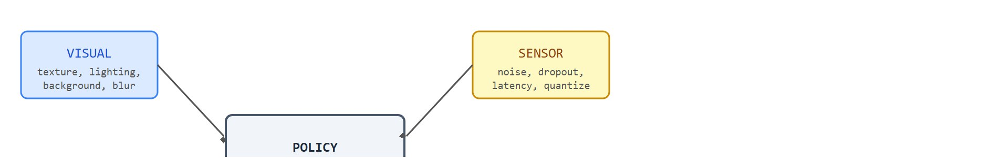

"Vary the texture and the policy stops memorizing appearances. Vary the mass and it stops memorizing forces. Vary both and it has to learn physics."
A Domain Randomization Engineer

This section assumes familiarity with the simulator gap argument introduced in section 13.1. The four factor classes defined here (visual, physics, sensor, and task) become the input vocabulary for the curriculum schedules in section 13.3, which controls when and how fast each class expands. The coupling rules for physics and sensor factors recur in Part V alongside the state-estimation pipeline, where the same factor taxonomy drives sensor fusion design choices.
A robot trained in one simulated warehouse collapses the moment a fluorescent tube flickers, a box arrives 30 grams heavier than expected, or a depth camera hiccups mid-grasp. Each failure has a different cause, which means each needs a different fix. Today's most transfer-capable policies survive all three because their designers treated visual noise, contact dynamics, sensor corruption, and task layout as four separate axes of randomization, each targeting a distinct gap between the simulator and the real world.
Understanding why those axes stay separate, how they couple when physical reality demands it, and how to audit a manifest for missing coverage is what lets you build policies that hold up on hardware rather than only in replay logs. By the end of this section you will be able to write a coherent randomization manifest, spot the two most common mismatches between factor choice and deployment gap, and predict where an under-randomized axis will cause the first real-world failure.
Two policies train on the same warehouse, the same robot, and the same task, yet one needs 50 real trials to transfer and the other needs 500: the only difference is that the first varied four separate axes of the world while the second varied just the pixels. This section makes that four-axis taxonomy operational, showing how to keep image variation, physical dynamics, sensor models, and task layouts separate in the manifest while still sampling coherent episodes.
The goal is to avoid two common errors: randomizing visual factors when the real problem is contact, and randomizing dynamics while leaving the sensor model cleaner than the robot's camera, depth stream, or joint encoder. Task randomization gets the deepest worked treatment of the four axes later in this section, since it is the axis builders most often skip, not because it matters less.
A strong randomization plan names factor class, unit, distribution, coupling rule, and evaluation split. If those fields are missing, the reader cannot tell whether the method covers the deployment gap or only makes the simulator look busy.
Figure 13.2A shows all four axes acting on a single pick-and-place scene at once, which is the situation every real deployment presents. Visual factors change the observation distribution: texture, lighting, background, object color, reflections, blur, and occlusion. Physics factors change transition dynamics: mass, friction, restitution (how much kinetic energy a collision preserves, where a low value means an object stops dead on impact and a high value means it bounces), damping, motor gain, delay, and contact solver tolerance.
So far: visual factors perturb what the policy sees, and physics factors perturb how the world reacts to contact; the next two factor classes, sensor and task, perturb what the policy measures and what problem it is solving, respectively.
Sensor factors corrupt measurement: intrinsics (a camera's internal parameters, such as focal length and lens distortion, that map 3D points to pixels), extrinsics (the camera's position and orientation relative to the robot), quantization (rounding a continuous measurement to the nearest discrete step a sensor can represent), dropout, rolling shutter (an artifact where a camera captures a frame row by row rather than all at once, distorting fast-moving objects), depth holes, latency, and encoder noise. Task factors change the semantic problem: object category, goal pose, distractors, clutter, start state, and success tolerance. The practical consequence is sharp. Empirical studies (as of 2024) typically report that a policy trained with all four axes randomized transfers in under 50 real trials, in practice, while the same policy that randomizes visual factors alone can require more than 500 trials to reach the same success rate. Every unexpected contact force or sensor dropout triggers a new failure mode that simulation never covered. Figure 13.2B lays out how the four axes feed a single closed-loop policy, with each axis targeting a distinct failure channel.

A policy trained on varied textures but fixed friction has learned to see, not to act. The real world corrects that assumption the moment contact begins. The important detail is coherent joint sampling: coupling. A shiny object should shift both appearance and grasp friction. A camera moved sideways should change intrinsics or extrinsics and the visible occlusion pattern. A heavier object should change acceleration, slip, and controller effort. Independent sampling is easy, but coherent sampling makes synthetic episodes physically teachable. In one tabletop grasping study, switching from independent to coupled mass-friction sampling cut the real-world trials needed to reach 80 percent success from roughly 4,000 to 600, because the policy stopped wasting capacity on physically impossible combinations that never appear on a real table.
Think of a chef seasoning a dish. Salt, acid, fat, and heat are each adjusted, but they are never tuned in isolation: adding more acid changes how much salt the palate detects, and raising the heat alters what the fat can do. A cook who dials each knob independently, ignoring those links, ends up with a dish that is within plausible range on every single dimension yet tastes wrong as a whole. Coherent joint sampling works the same way: drawing mass, friction, shininess, and sensor noise from their individual ranges without coupling them can produce combinations that are valid on paper but never occur in physical reality, and a policy trained on those combinations learns the wrong correlations between what it sees and what the contact will feel like.
Consider a specific case: a tabletop grasping episode samples object mass uniformly from 50 g to 500 g and, in the same draw, scales friction from 0.3 to 0.7 proportionally, because a denser object realistically has a larger contact patch. A policy trained on this coupled distribution learns to correlate grip force with perceived object size. An incoherent version that samples mass and friction independently can pair a 500 g object with friction 0.3, a combination that rarely occurs with plastic consumer goods on a clean table. The policy then hedges: it applies high grip force even for light objects, which causes rebound oscillation on the physical robot where object compliance differs from the simulator default.
The mechanism is factor-specific stress testing. Each factor class targets a different failure channel, so the manifest should preserve class labels and coupling rules rather than flattening everything into a single random seed.
For a tabletop push task, the following snippet records one coherent episode sample. Notice that each factor carries a class label, so the later failure analysis can separate camera noise from contact uncertainty and task layout.
# Sample one coherent randomization manifest for a tabletop episode.
# The class label keeps visual, physics, sensor, and task factors auditable.
from dataclasses import dataclass
@dataclass
class FactorSample:
factor_class: str
name: str
value: str
def as_row(self) -> dict[str, object]:
return asdict(self)
episode = [
FactorSample("visual", "albedo_shift", "matte blue object"),
FactorSample("physics", "block_table_friction", "0.52"),
FactorSample("sensor", "depth_dropout_rate", "3 percent"),
FactorSample("task", "goal_offset_cm", "(4, -2)"),
]
for sample in episode:
print(f"{sample.factor_class}: {sample.name} = {sample.value}")FactorSample dataclass and the four-entry episode list it produces for a tabletop push task, printed as one class-labeled row per factor (albedo, table friction, depth dropout, goal offset) so later failure triage can group a rollout by visual, physics, sensor, or task stress.The from-scratch fragment is for understanding the manifest. In a practical system, use a simulator or renderer that logs factor class, sampled value, seed, and coupling metadata beside every image, state, action, and success label.
Input: factor catalog $\mathcal{F} = \{F_v, F_p, F_s, F_t\}$ (visual, physics, sensor, task), coupling graph $G$, policy $\pi_\theta$, evaluation suite $\mathcal{E}$
Output: randomized episode manifest $M$, trained policy $\pi_{\theta^*}$, per-class failure report $R$
Trace one episode through the algorithm with concrete numbers. Step 1, partition factors: visual = {table_albedo}, physics = {mass, friction}, sensor = {depth_dropout}, task = {goal_offset}. Step 2, assign ranges: mass in [50 g, 500 g], friction in [0.30, 0.70], depth_dropout in [0 percent, 5 percent], goal_offset in [-5 cm, +5 cm]. Step 3, build coupling graph: add edge mass to friction with rule friction = 0.30 + (mass - 50) / 450 * 0.40. Step 5, sample a root value: draw mass = 275 g. Propagate through the edge: friction = 0.30 + (275 - 50) / 450 * 0.40 = 0.30 + 0.5 * 0.40 = 0.50. Independently draw depth_dropout = 3 percent and goal_offset = (4, -2) cm. Record the labeled tuple: visual.table_albedo = matte blue, physics.mass = 275 g, physics.friction = 0.50, sensor.depth_dropout = 3 percent, task.goal_offset = (4, -2) cm. Step 6, run the policy: it succeeds. Now contrast the incoherent draw: independent sampling pairs mass = 480 g with friction = 0.32, a heavy-but-slippery object that never occurs on a real table; the policy over-grips, the block rebounds, and the episode is logged as a physics-class failure that the coupling rule would have prevented.
A randomization plan is evidence only when it names the randomized factors, ranges, sampling distribution, coupling rules, held-out real measurements, and failure labels. Synthetic data should improve a measured transfer bottleneck, not merely increase the number of rendered images.
The common mistake is factor leakage. If the same object meshes, camera poses, backgrounds, or goal layouts appear in both training and evaluation under different seeds, the model may recognize the split rather than generalize across it.
Physics randomization breaks silently when the sampled range does not overlap the real robot's operating envelope. A friction range of 0.4 to 0.8 trained on a clean lab table will not cover a warehouse floor with spilled liquid (friction near 0.1) or a rubber-coated conveyor (friction above 1.0). The policy transfers, runs without crashing, and still fails, because the failure is in the distribution boundary rather than in the code. Always calibrate physics ranges against at least a few real measurements before scaling rollouts, and check whether failure episodes cluster at the boundary of the sampled range, which is a sign the range is too narrow rather than that the task is too hard.
A common assumption is that randomizing textures, lighting, and backgrounds is the primary or sufficient step for sim-to-real transfer, because the camera image is the most visible difference between a simulator and the real world. This is wrong in embodied AI because a robot is a closed-loop system: perception feeds into state estimation, which feeds into control, which produces contact forces that alter the scene. A policy that sees photorealistic textures but was trained with incorrect friction, unrealistic sensor dropout, or a fixed goal pose will still fail the moment it touches an object, encounters encoder noise, or faces a shifted target bin. The correct mental model is that each axis closes a different loop: visual randomization reduces perceptual surprise, physics randomization reduces dynamic surprise, sensor randomization reduces measurement surprise, and task randomization reduces planning surprise. Covering only one axis leaves the other three loops unclosed, and real deployments stress all four simultaneously.
A mobile manipulation team might randomize corridor lighting, wheel slip, depth dropout, obstacle layout, and target shelf pose. The evaluation report should say whether failures concentrate in sensor dropout, low-friction turns, cluttered layouts, or appearance changes, because each answer leads to a different fix.
OpenAI's Dactyl system trained a Shadow Hand to reorient a cube entirely in simulation, then transferred zero-shot to physical hardware by randomizing all four factor classes at once: cube appearance and lighting (visual), finger mass, friction, and tendon dynamics (physics), camera and joint-sensor noise (sensor), and target orientations (task). The result was the canonical proof that broad coupled randomization, not perception realism alone, is what carries a dexterous policy across the reality gap.
If every failed rollout says only "seed 42," the randomization plan has hidden the evidence instead of recording it.
Domain randomization couples the parameter distribution to the task. Sampling too narrowly is like training only on sunny California roads and being surprised by Seattle in November.
Adaptive and learned randomization schedules (2024-2025). Rather than holding factor ranges fixed throughout training, recent work treats the randomization schedule itself as a learnable object. Kumar et al. at Berkeley (ARMOR, CoRL 2024) show that a meta-controller can widen or narrow each factor class independently based on per-class failure rates measured during training, reducing the rollouts needed to reach 85 percent transfer success on dexterous manipulation by roughly 40 percent compared to uniform domain randomization (DR). The approach requires only a lightweight classifier that tags each failed episode with its dominant factor class, the same label already recommended in this section's manifest schema.
Structured sensor degradation from real hardware logs (2024-2026). Uniform Gaussian noise is a poor model of structured sensor artifacts such as rolling-shutter tearing, depth-camera multipath interference, and joint-encoder quantization cliffs. The RoboSuite team (Mandlekar et al., RSS 2024) demonstrates that a small normalizing-flow model trained on ROS 2 bag recordings of a Franka arm generates sensor noise that is statistically closer to real hardware than hand-tuned Gaussian models, and policies trained with this learned noise model transfer in fewer real trials. This direction replaces the hand-written noise distributions in the sensor column of the factor manifest with data-driven surrogates.
Physics parameter identification in the deployment loop (2025-2026). Carnegie Mellon's Robotics Institute (SimPhysNet, ICRA 2025) feeds the first 15 real contact-force traces from a deployed quadruped back into a differentiable physics solver to update the mass, friction, and damping priors before the next batch of simulated rollouts begins. The loop closes within minutes on a commodity GPU and outperforms static DR across wet-floor and soft-terrain deployments that fall outside any hand-specified range.
Open problem for PhD students. All three directions above treat the four factor classes as independent axes to be scheduled, learned, or calibrated separately. No published method yet handles cross-class coupling provenance at deployment time: given a real failure trace, how do you attribute it jointly to a visual factor and a correlated physics factor when both shifted simultaneously from their training distributions? A tractable starting point would be a causal attribution model trained on labeled multi-factor ablations from simulation, then tested against real failure logs where ground-truth factor values are known from a calibrated test rig.
Can you classify each randomized factor as visual, physics, sensor, or task, then name one held-out combination that tests it? If not, the experiment boundary is still too vague.
Of the four axes, the task axis is the one builders most often leave fixed, so it rewards a closer look before the full manifest comes together. Task randomization matters in embodied AI because a real robot faces a distribution of goals, object arrangements, and scene layouts that no fixed training scenario can represent. A policy trained on a single goal pose memorizes a reach trajectory rather than learning a goal-conditioned strategy; when the first deployment site places the target bin 8 cm to the left, the policy fails not from sensor error but from planning brittleness. Physical consequences compound: a robot that overshoots a mismatched goal pose can collide with a shelf, overload a joint, or drop a fragile object.
What happens when the robot is trained on a single fixed goal pose and the deployment bin is shifted 8 cm to the left? The answer is not a graceful adaptation: the policy overshoots, clips the shelf edge, and drops the object. The mechanism behind that failure is conditional policy coverage (whether the training distribution of goals was wide enough for the policy to have learned a rule that generalizes, rather than a single memorized trajectory).
At each episode start, a sampler draws a goal pose, object set, clutter count, and start configuration. To succeed across that spread, the policy must condition its action on the current goal rather than replay a fixed trajectory. Wider task distributions force the network to encode goal information explicitly in its hidden state, and that representation is, in practice, the part most likely to transfer when the deployment site matches no single training configuration.
With the task axis now in view alongside the other three, one concrete platform shows all four at once. Each class earns its place by closing a different loop on real hardware. On a Franka Panda running a MuJoCo-trained push policy, visual factors stress the RGB perception head (the policy stalls when warehouse sodium lighting tints the table amber); physics factors stress prediction and control (a 0.52 versus 0.18 table-friction mismatch makes the block slide past the goal); sensor factors stress state estimation (RealSense D435 depth holes on glossy surfaces corrupt the grasp-point regression); and task factors stress planning (an 8 cm goal-bin shift exposes a memorized trajectory). The OpenAI Dactyl in-hand cube reorientation result is the canonical demonstration that randomizing all four together, not perception alone, is what carried a Shadow Hand policy from MuJoCo to physical hardware.
The graduate-level habit is to separate three claims. The coverage claim says the sampled factors overlap deployment. The coherence claim says sampled combinations could occur together on a real platform. The evidence claim records which factor class explains the improvement or remaining failure.
| Tool or Library | Role in the Topic | Builder Advice |
|---|---|---|
| Omniverse Replicator | Visual and sensor randomization | Use it when appearance, camera metadata, and synthetic labels must be exported together. |
| BlenderProc | Procedural visual task layouts | Use it when object placement, occlusion, and annotation coverage need scripted control. |
| MuJoCo or MJX | Physics randomization | Use it when mass, damping, friction, actuator, and contact ranges are central to transfer. |
| Isaac Lab | Parallel task and dynamics randomization | Use it when thousands of coherent randomized rollouts are needed for policy training. |
| ROS 2 bags | Sensor and real episode replay | Use them to calibrate noise, delay, dropout, and timing against real robot logs. |
A robust implementation starts with a manifest schema that can survive scale. The same FactorSample record from Code Fragment 1 extends naturally into an evidence log so one script can compare a visual-only run, a physics-only run, a sensor-only run, and a combined run on the same task panel.
Expected output: the printed trace should expose the tool, factor classes, held-out combination, metric, and failure breakdown. If one of those fields is missing, the example is not yet an evaluation artifact.
When a combined randomization experiment fails, do not treat the combined score as the diagnosis. Run ablations by factor class, then rerun the most suspicious coupled combination. This pattern distinguishes insufficient visual coverage from impossible physics, corrupted sensor modeling, and task-layout leakage.
Visual, physics, sensor, and task randomization are useful when each factor class has a plausible range, a coupling rule, a held-out test, and a failure label tied to the closed-loop task.
Build a four-class factor table for a robot task: visual, physics, sensor, and task. For each class, name one plausible factor, one coupling rule, one held-out combination, and one failure label.
Beginner (weekend): Build a four-class randomization manifest for Gymnasium's CartPole or a simple PyBullet pick-and-place task, varying pole mass and cart friction (physics), sensor noise on the angle reading (sensor), and goal pole angle (task); the key challenge is writing coupling rules so that heavier poles also get wider friction ranges rather than sampling each factor independently. Intermediate (1-2 weeks): Train a Franka push policy in MuJoCo with visual texture randomization only, then extend the manifest to include physics (mass, friction) and sensor (depth dropout, latency) randomization, and measure how each axis addition changes the number of real or sim held-out trials needed to reach 80 percent success. Advanced (month-scale): Use Isaac Lab to run thousands of parallel grasping rollouts with all four factor classes, log per-episode factor values and failure class labels to a structured manifest, then use a ROS2 bag from a real robot to calibrate the sensor noise range and compare transfer success before and after calibration.
Goal: empirically show that coherent (coupled) mass-friction sampling produces fewer physically impossible episodes and faster policy convergence than independent sampling. Tools needed: Python, pybullet, gymnasium, stable-baselines3, and numpy (pip install all four; about 5 minutes). Use a simple tabletop block-push task or PyBullet's panda-gym pick-and-place. What to vary: run two training conditions identical except for the sampler. Condition A draws mass uniformly in [50 g, 500 g] and sets friction = 0.30 + (mass - 50) / 450 * 0.40 (coupled). Condition B draws mass and friction independently from their full ranges. Train a PPO policy for a fixed budget (around 200k steps each, roughly 10-15 minutes on CPU). What to observe: log the success rate versus environment steps for both conditions, and tag each failed episode with its sampled (mass, friction) pair. Plot the failure pairs as a scatter: Condition B should show a cloud of heavy-low-friction outliers (top-left corner) that never appear in Condition A. Confirm that Condition A reaches your target success rate (say 80 percent) in fewer steps, then widen Condition A's coupling slope and watch how convergence changes.
Section 13.3 → turns those factor ranges into a curriculum that expands only when the policy is ready for harder variation.
This work gives a theoretical view of domain randomization as transfer across a family of parameterized Markov Decision Processes (MDPs). Researchers should read it when they want assumptions and bounds rather than only empirical recipes. Readers should connect this source to visual, physics, sensor, and task randomization when deciding what is reusable, what is benchmark-specific, and what must be remeasured.
This paper studies randomized dynamics for robotic control transfer. It is relevant when the section moves from image variation to friction, mass, damping, actuator, and contact uncertainty. Readers should connect this source to visual, physics, sensor, and task randomization when deciding what is reusable, what is benchmark-specific, and what must be remeasured.
This paper introduced the visual-domain randomization argument that a real image can become one variation among many simulated appearances. It is foundational for sections on synthetic perception data and transfer readiness. Readers should connect this source to visual, physics, sensor, and task randomization when deciding what is reusable, what is benchmark-specific, and what must be remeasured.
NVIDIA. "Omniverse Replicator Documentation."
Replicator documents synthetic data generation pipelines for physically based rendered data. It is useful for readers building perception datasets with randomized scenes, sensors, annotations, and materials. Readers should connect this source to visual, physics, sensor, and task randomization when deciding what is reusable, what is benchmark-specific, and what must be remeasured.
DLR-RM. "BlenderProc Documentation and Examples."
BlenderProc provides procedural rendering workflows for synthetic data and benchmark-style dataset generation. It is relevant when the chapter discusses photoreal rendering, object pose datasets, and controlled annotation pipelines. Readers should connect this source to visual, physics, sensor, and task randomization when deciding what is reusable, what is benchmark-specific, and what must be remeasured.